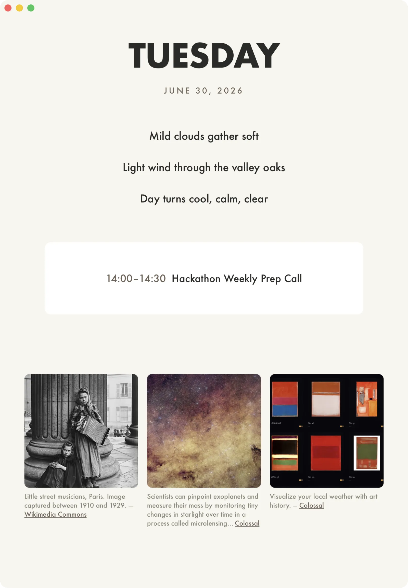

Daily Brief
V.0.2
I wanted a "Good Morning" app. I honestly don't have many meetings right now, so to fill the page, I have a haiku about the weather, and then a few images. I chose Wikipedia and Colossal so I get a bit of history and art. I initially tried loading in news, but it's just not what I want when sitting down to my desk.
I like how simple this is. Next I'll probably do something where it hides all the other app windows and just display this to start the day.